營業用POS機主要是由觸控電腦、出單機以及錢箱所組成，這些硬體組件
都可以在網路、Yahoo露天拍賣網或淘寶網(註)買到，總類及品牌也相當
多元。
以下針對各硬體周邊做介紹
| 1.主機 |
觸控螢幕 + 小體積主機
觸控螢幕 22吋: viewsonic TD2220 ,viewsonic TD2240
20吋: ASUS VT207N
小體積電腦 選擇眾多 ,可參考 Pchome 購物連結
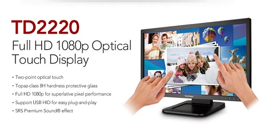
當然不同效能的電腦售價也不太一樣 , 越高的效能使用起來當然是越流暢 , 畢竟是一分錢一分貨,評鑑的標準是 CPU 在500分的情況 , 記憶體 2G 以上 ,先用POS使用起來是大部分的人都可以接受的
All in one
以目前所有電腦硬體來看，All in one的多點觸控電腦
是比較簡單的選擇
1.螢幕大，操作舒適(20吋 22吋 24吋)
2.美觀
3.多點電容觸控螢幕，觸控靈敏
4.華碩、微星、Lenovo、Acer等世界級大廠製造，
品質或保固有保障
5.內附windows正版授權
6.價格透明，不怕買貴
7.支援高解度、螢幕清晰不模糊
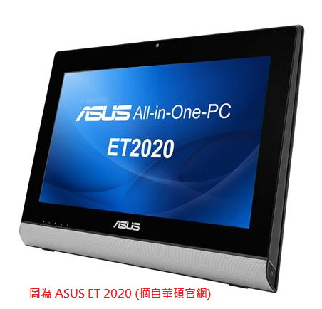
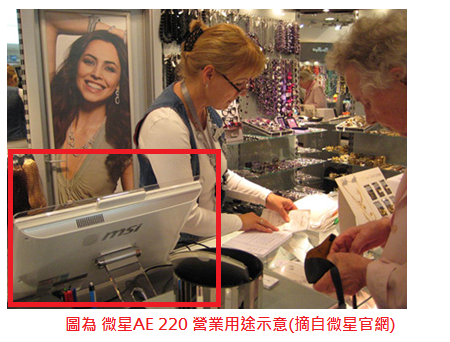
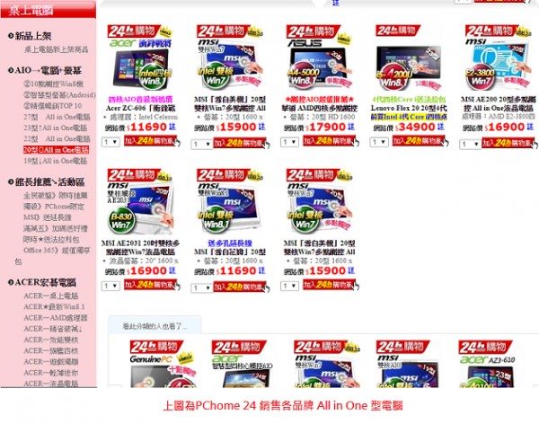
傳統一體POS機
當微軟的Windows成為主流，大部分的軟體廠商都選擇在windows下發展POS
系統，當時的POS就如同個人電腦， 就是一台電腦主機，上面再放台螢幕，
比較占據空間。
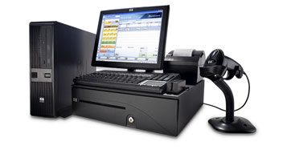
10幾年前，POS開始將電腦主機與螢幕合成一體，體積大幅縮減，受到廣大的歡迎，目前很多店家都採用這類的一體機。
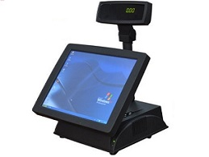
時至今日，因智慧型手機快速發展，觸控技術已有大幅成長，以現今規格及外觀設計標準來看這些傳統POS一體機，便顯得略微遜色。
目前製造商多分佈在中國大陸 ，淘寶網上很多品牌可供選擇。
(台灣也有幾家POS製造商， 如 振樺電子、飛捷科技、伍豐等，主要銷售對象為國內外大型購物中心、連鎖餐飲等大型客戶，一般銷售通路比較少看到)
1.螢幕多為15吋，且是單點觸控(電阻式)，
與手機平板操作習慣有些差異
2.硬體規格較低階，價格也較便宜
3.內建Windows 多為XP老舊版本
4.多數外觀設計不夠現代
5.價格不透明，對POS商而言，利潤空間較大
6.多數解析度為1024 X768，已經過時
7.品牌能見度不佳，售後保固服務不明
WIndows平板電腦
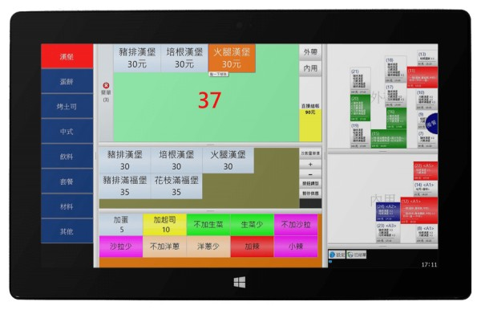
如果店內空間狹小 ,windows 的平板電腦是一個很好的選擇,我們另外精心製作另一個網頁,介紹有關於先用在平板電腦的使用,連結網址在此
筆記型電腦
如果預算上較不足 ，可以接受沒有觸控
那也可以先用筆記型電腦替代
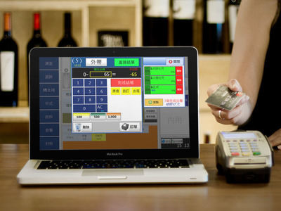
| 2.錢箱 |
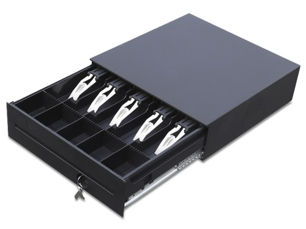
市面上有兩總規格 RJ11 與USB
1.RJ11(適用於有印單機的用戶)
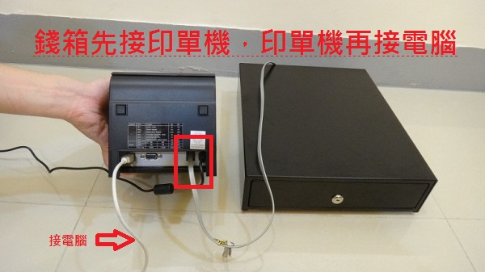
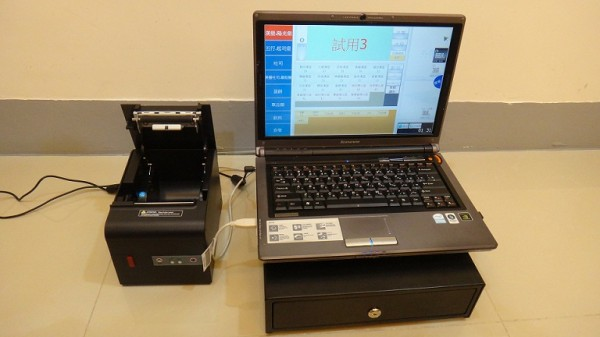
2.USB (直接連接電腦,適用沒有印單機的用戶)
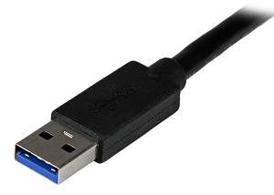
| 3.印單機 |
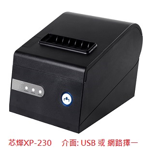
先用POS 最多支援兩台印單機，
可依照餐點總類分送到不同的印單機
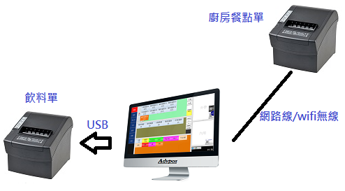
吧檯飲料印單機 ，只印出飲料品項
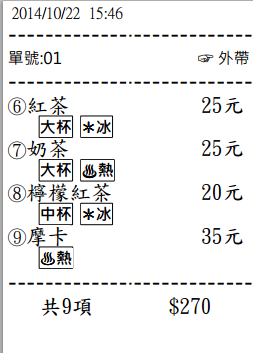
廚房餐點印單機 ，只印出餐點品項
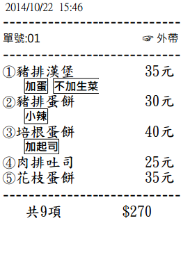
當然 只有一台印單機也是可以的
另外 管理報表也可以透過Excel從熱感印單機印出，自動調整成符合熱感紙張
的大小，完全不需要在Excel做其他額外調整。

無線連接印單機
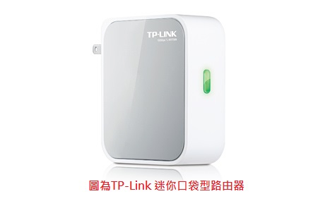
當用戶windows平板電腦 ，或一些緣故無法佈線，便可以採用無線印單機
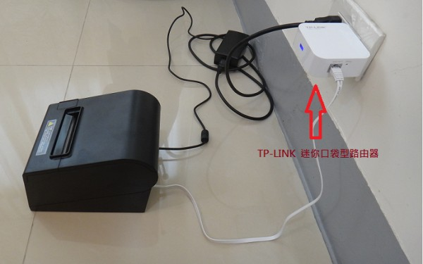
https://www.youtube.com/watch?v=WEiGtqbQ2_0
| 4.第二觸控螢幕 |
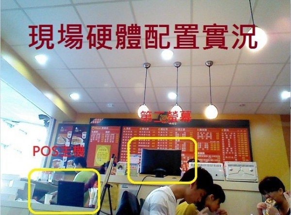
POS主機負責點餐 ，第二螢幕只要出完菜，便點一下標註已出餐
youtube影片示意
https://www.youtube.com/watch?v=PgUHcc3Ka8M
| 5.第三顯示螢幕 |
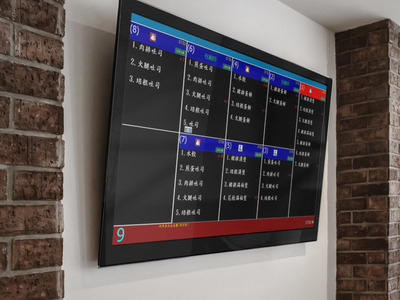
如果想把目前備餐的情形，公開給客人看 ，讓客人了解一下備餐進度
這也是可以的，事實上 目前的確有用戶是採用三個螢幕
| 6.飲料貼紙機 |
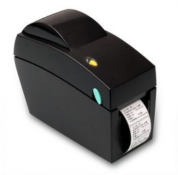
與印單機一樣 ， 最多支援兩台 ，一個品項印一張貼紙
可貼在飲料邊或餐盒上
也可指定哪些品項要印或不印，或依地理位置印到哪一台
| 7.簡單易用的POS系統 |
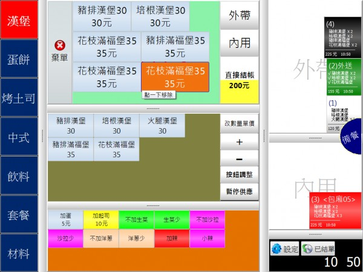
如果沒有一套優秀的POS軟體，再強大美觀的硬體也無法發揮效用。
先用POS就是一套簡單直覺且易用的POS軟體，
我們的設計理念是簡單易用，簡潔的操作面板下蘊含許多強大的功能。
一個步驟就能完成的事，絕對不會要您做2個甚至3個無謂的點擊。
操作過先用POS系統後，我們很難保證您能接受使用其他的POS系統。
我們非常歡迎您來試用，因為我們對自己的系統有信心。
以上對POS硬體及周邊做簡單介紹，如果您有任何問題
歡迎您按此提問，站長會盡力解答。
(註:淘寶網上的POS商品總類繁多，目前台灣買淘寶網已經十分方便，
寄送台灣運費也相對低廉)